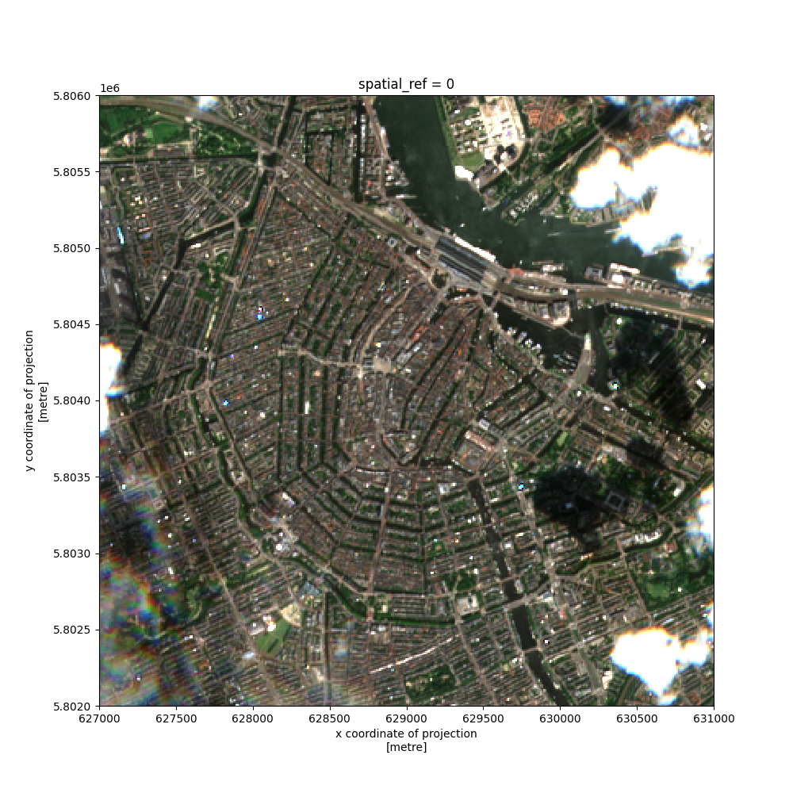
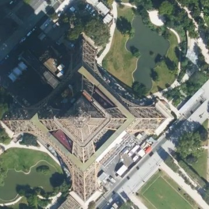

Uydu Fotoğrafları Erişimi
Sık güncellenen uydu fotoğraflarına erişmek için pystac_client,rioxarray;
pip ile kurulur. Örnek enlem, boylam için,
from pystac_client import Client
import matplotlib.pyplot as plt
import pandas as pd, numpy as np
import rioxarray
api_url = "https://earth-search.aws.element84.com/v0"
client = Client.open(api_url)
collection = "sentinel-s2-l2a-cogs"
lat, lon = 52.37, 4.90
geometry = {"type": "Point", "coordinates": (lon, lat)}
mysearch = client.search(
collections=[collection],
intersects=geometry,
max_items=10,
)
for item in mysearch.items():
print (item)
print(item.assets["thumbnail"].href)
visual_href = item.assets["visual"].href
break # ilk sonucu kullan
<Item id=S2A_31UFU_20220629_0_L2A>
https://roda.sentinel-hub.com/sentinel-s2-l1c/tiles/31/U/FU/2022/6/29/0/preview.jpg
Sonuçta bir preview.jpg görülüyor. Bu ufak bir dosya, erişilip
bakılabilir, kabaca görüntünün nasıl olduğunu anlamak için iyi
olabilir. Öteki bilgiler,
print(item.datetime)
print(item.geometry)
print(item.properties)
2022-06-29 10:56:35+00:00
{'type': 'Polygon', 'coordinates': [[[6.071664488869862, 52.22257539160586], [4.464995307918359, 52.25346561204129], [4.498475093400055, 53.24019917467795], [6.1417542968794585, 53.20819279121764], [6.071664488869862, 52.22257539160586]]]}
{'datetime': '2022-06-29T10:56:35Z', 'platform': 'sentinel-2a', 'constellation': 'sentinel-2', 'instruments': ['msi'], 'gsd': 10, 'view:off_nadir': 0, 'proj:epsg': 32631, 'sentinel:utm_zone': 31, 'sentinel:latitude_band': 'U', 'sentinel:grid_square': 'FU', 'sentinel:sequence': '0', 'sentinel:product_id': 'S2A_MSIL2A_20220629T104631_N0400_R051_T31UFU_20220629T170417', 'sentinel:data_coverage': 100, 'eo:cloud_cover': 22.69, 'sentinel:valid_cloud_cover': True, 'sentinel:processing_baseline': '04.00', 'sentinel:boa_offset_applied': True, 'created': '2022-06-29T19:43:11.806Z', 'updated': '2022-06-29T19:43:11.806Z'}
Zaman damgasına bakıyoruz 29/6 diyor, kodu 30/6'da işlettik, fena değil. Birkaç günlük gecikme ile yeryüzünde pek çok noktanın görüntüsüne erişmek mümkün demek ki.
Esas detaylı görüntü dosyası altta,
print (visual_href)
https://sentinel-cogs.s3.us-west-2.amazonaws.com/sentinel-s2-l2a-cogs/31/U/FU/2022/6/S2A_31UFU_20220629_0_L2A/TCI.tif
Fakat bu dosya 100 MB'tan fazla olabilir, bu sebeple çoğunlukla
yapılan dosyanın parçalarını indirmek, rioxarray bu işlemi
gerçekleştirebilir, x,y için minimum, maksimum noktalar verip bir ufak kutu
yaratabiliyoruz, ve sadece bu ufak kutudaki detaylı imaj parçası geri
döndürülüyor.
visual = rioxarray.open_rasterio(visual_href)
print(visual)
visual_clip = visual.rio.clip_box(
minx=627000,
maxx=631000,
miny=5802000,
maxy=5806000
)
visual_clip.plot.imshow(figsize=(10,10))
plt.savefig('uydu_01.png')
<xarray.DataArray (band: 3, y: 10980, x: 10980)>
[361681200 values with dtype=uint8]
Coordinates:
* band (band) int64 1 2 3
* y (y) float64 5.9e+06 5.9e+06 5.9e+06 ... 5.79e+06 5.79e+06
* x (x) float64 6e+05 6e+05 6e+05 ... 7.098e+05 7.098e+05 7.098e+05
spatial_ref int64 0
Attributes:
_FillValue: 0.0
scale_factor: 1.0
add_offset: 0.0
grid_mapping: spatial_ref

Detaylar net gözüküyor..
Mapbox
Sık güncellenmese de dünyanin her noktası için hızlı görüntü almanın bir
diğer yolu Mapbox. Sitesinden anahtar alınır, bizdeki bir json .conf
dosyası içinde. Eyfel kulesi fotoğrafı için,
def sat_img(latitude, longitude, zoom, outfile):
params = json.loads(open(os.environ['HOME'] + "/.nomterr.conf").read())
accessToken = params['mapbox']
def latToTile(latDeg, zoom):
latRadians = math.radians(latDeg)
n = 2.0 ** zoom
return int((1.0 - math.asinh(math.tan(latRadians)) / math.pi) / 2.0 * n)
def lonToTile(lonDeg, zoom):
n = 2.0 ** zoom
return int((lonDeg + 180.0) / 360.0 * n)
url = ("https://api.mapbox.com/v4/" + "mapbox.satellite/" + str(zoom) + "/" + str(lonToTile(longitude, zoom)) +
"/" + str(latToTile(latitude, zoom)) + "@2x.png?access_token=" + accessToken)
response = requests.get(url, stream=True)
with open(outfile, "wb") as image:
shutil.copyfileobj(response.raw, image)
sat_img(48.85859253797154, 2.2945835762002353, 17, "uydu_02.jpg")

Kaynaklar
[1] [The Carpentries Incubator](https://carpentries-incubator.github.io/geospatial-python/19-access-data/index.html)
Yukarı